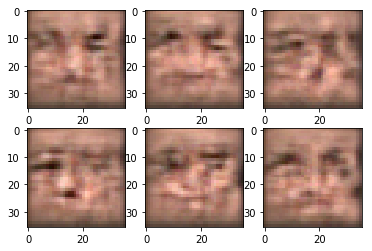

This time we'll train a neural net to generate plausible human faces in all their subtlty: appearance, expression, accessories, etc. 'Cuz when us machines gonna take over Earth, there won't be any more faces left. We want to preserve this data for future iterations. Yikes...
Based on https://github.com/Lasagne/Recipes/pull/94 .
import matplotlib.pyplot as plt %matplotlib inline import numpy as np plt.rcParams.update({'axes.titlesize': 'small'})
from sklearn.datasets import load_digits #The following line fetches you two datasets: images, usable for autoencoder training and attributes. #Those attributes will be required for the final part of the assignment (applying smiles), so please keep them in mind from lfw_dataset import load_lfw_dataset data,attrs = load_lfw_dataset(dimx=36,dimy=36)
Deep learning is simple, isn't it? * build some network that generates the face (small image) * make up a measure of how good that face is * optimize with gradient descent :)
The only problem is: how can we engineers tell well-generated faces from bad? And i bet you we won't ask a designer for help.
If we can't tell good faces from bad, we delegate it to yet another neural network!
That makes the two of them: * __G__enerator - takes random noize for inspiration and tries to generate a face sample. * Let's call him G(z), where z is a gaussian noize. * __D__iscriminator - takes a face sample and tries to tell if it's great or fake. * Predicts the probability of input image being a real face * Let's call him D(x), x being an image. * D(x) is a predition for real image and D(G(z)) is prediction for the face made by generator.
Before we dive into training them, let's construct the two networks.
1 2 3 4 5 6 7
import tensorflow as tf from keras_utils import reset_tf_session s = reset_tf_session()
import keras from keras.models import Sequential from keras import layers as L
assert generator.output_shape[1:] == IMG_SHAPE, "generator must output an image of shape %s, but instead it produces %s"%(IMG_SHAPE,generator.output_shape[1:])
Discriminator
Discriminator is your usual convolutional network with interlooping convolution and pooling layers
The network does not include dropout/batchnorm to avoid learning complications.
We also regularize the pre-output layer to prevent discriminator from being too certain.
We train the two networks concurrently: * Train discriminator to better distinguish real data from current generator * Train generator to make discriminator think generator is real * Since discriminator is a differentiable neural network, we train both with gradient descent.
defsample_images(nrow,ncol, sharp=False): images = generator.predict(sample_noise_batch(bsize=nrow*ncol)) if np.var(images)!=0: images = images.clip(np.min(data),np.max(data)) for i inrange(nrow*ncol): plt.subplot(nrow,ncol,i+1) if sharp: plt.imshow(images[i].reshape(IMG_SHAPE),cmap="gray", interpolation="none") else: plt.imshow(images[i].reshape(IMG_SHAPE),cmap="gray") plt.show()
defsample_probas(bsize): plt.title('Generated vs real data') plt.hist(np.exp(discriminator.predict(sample_data_batch(bsize)))[:,1], label='D(x)', alpha=0.5,range=[0,1]) plt.hist(np.exp(discriminator.predict(generator.predict(sample_noise_batch(bsize))))[:,1], label='D(G(z))',alpha=0.5,range=[0,1]) plt.legend(loc='best') plt.show()
Training
Main loop. We just train generator and discriminator in a loop and plot results once every N iterations.
1 2 3 4 5 6 7 8 9 10 11 12 13 14 15 16 17 18 19
from IPython import display
for epoch in tqdm_utils.tqdm_notebook_failsafe(range(50000)): feed_dict = { real_data:sample_data_batch(100), noise:sample_noise_batch(100) } for i inrange(5): s.run(disc_optimizer,feed_dict) s.run(gen_optimizer,feed_dict) if epoch %100==0: display.clear_output(wait=True) sample_images(2,3,True) sample_probas(1000)
pngpng
1 2
from submit_honor import submit_honor submit_honor((generator, discriminator), <YOUR_EMAIL>, <YOUR_TOKEN>)
1 2 3 4
#The network was trained for about 15k iterations. #Training for longer yields MUCH better results plt.figure(figsize=[16,24]) sample_images(16,8)
 © research.nvidia.com
© research.nvidia.com
 © torch.github.io
© torch.github.io © deeplearning4j.org
© deeplearning4j.org